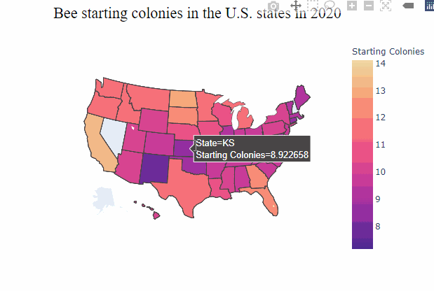

4 Exploratory Data Analysis
Before you can dive into the data, set up your programming environment. This will be the place where the magic happens - all your coding takes place there.
In your workspace on RStudio Cloud, we have already uploaded an “assignment” for you (Template HoneyAndBees). When you create a new project within the workspace Class of ’22 | TechAcademy | Data Science with R, your workspace will open up.
We’ve already made some arrangements for you: The data sets you will be working with throughout the project are already available in your working directory.
We also created an RMarkdown file (a file that ends with .Rmd extension), with which you will be able to create a detailed report of your project.
You can convert that file into an HTML document when you have finished coding the project in R.
Open the file Markdown_HoneyAndBees.Rmd and see for yourself!
We recommend using Google Colab for this project since it requires no particular setup, stores its notebooks to your Google Drive, and makes it easy for you to share them with your team members.
As an alternative to Google Colab, you might want to install Jupyter Notebook locally using the Anaconda distribution. We will give you a more detailed step-by-step demo during the first coding meetup.
Next up is importing the data sets. It’s best to this once on the top level of your notebook / script. You can always copy to new variables and work on slices of the data frames afterwards.
4.1 Exploring Honey and Bees Data
4.1.1 Discovering Formats, Frequencies, and Fuck-ups
Let’s start by looking at the bee & honey data sets.
- Have a look at the frequency of the records (is there a difference across sets?)
- Do you see any missing values or data entries that are different from the other entries?
- What are the data formats (e.g. data types like strings or floats but also date formats such as yearly)?
- Look at the unit of every variable, can you make sense of the units?
Write down a couple of sentences to these questions. Also, comment on any errors / difficulties which you notice and that could be an issue later on in the project. No worries, there is no right or wrong.
You can import the data directly from your working directory. Use head(), str(), or class() to get an overview.
You can feed the links to the respective data files above to a method of the
pandas package (you might want to specify the index column).
Check out the resulting pd.DataFrame instance with the head() method and
the dtpyes attribute. You can also dig into a specific column with describe().
Here’s an additional pandas cheat sheet for you to reference
4.1.2 Give some overall statements
Lets stick with the honey data. Since you have already got a feeling by now, it would be interesting to indicate some outstanding features of the set:
- Which state had the most producing colonies ever and in which year? Anything special about that state?
- What state had the lowest price for honey. How low was it?
- What is the total Honey production for 2016?
4.2 Data Cleaning and Useful Transformations
The exercises in this and the next section are about the bees data set. On a later stage of the project we would like to merge it with the honey data set. To this end, we will now spend some time preparing the bees data.
4.2.1 Date Formatting
Remember, one of the differences is the frequency of the data. The date (format) of the bees set is quarterly whereas we have yearly honey data.
Recall also that dates, even just years, can be formatted differently than just as a string or integer. Maybe you have checked it before, but now is definitely the moment to translate the Date column to a fitting date format.
Add tip
pd.to_datetime()
4.2.2 More Data Types - Strings, Ints, and Floats
So far you converted years into a more appropriate date format for further investigation. Now, look at the other columns of the bees data set: Some appear to contain numbers but are they also of a numeric data type? Check out all columns so you don’t miss out on one!
For further calculations, it is safer to convert these columns to such a numeric data type. While there are vectorized methods that can convert data types at once, we would like you to write a simple (really) ‘for’ loop to conduct the conversions.
Add tip
You need an iterable to loop over, the semicolon after the keyword, and the indentation of the subsequent lines! Here is a cheat sheet in case you have forgotten.
4.2.3 Converting Units
From the column names you can see that the honey data set is in pounds as we are dealing with an U.S. data set. However, we are devoted followers of the metric system and do not understand pounds. Consequently, we would like to translate them to kilogram [kg]. While you are at it, you might want to give your new columns in kg a shorter name with less spaces in it …
4.3 Simple Metrics
4.3.1 Missing Values
Look at the bees set and its missing values. Decide on how you want to treat them and give us a detailed explanation why you have decided to treat the missing values the way you did. Keep in mind that these transformations affect all your subsequent work on the data and may bias your findings. Sometimes you are lucky and can also identify a pattern that will ease your pain of treating the values and deciding for a strategy.
There are many possibilities: From excluding the rows to forward / backward fills or even inserting an average / median.
We highly recommend the Datacamp course on missing values in R for this exercise.
We highly recommend the Datacamp course on missing values in Python for this exercise.
4.3.3 Group Means
We want to merge the honey and bees data set to analyze them jointly. To do so we need to reduce the frequency of the bees data frame (quarterly) to yearly. Accordingly, you would like to group by state and quarter and replace the observations by an aggregate. You decide to replace with the mean (over the four quarters). Please mind how you are rounding, print the table of your aggregated data frame, and answer the following two questions
- What are potential hazards of reducing data like this?
- What other measures could you use?
You may refer to the following graph.

There is no absolute answer to these questions since your approach most likely depends on what you are analyzing / trying to show or understand.
Add tip
Add tip
4.4 Merging Data Sets
When preparing to data sets, it is wise to check the naming of columns again. Please give your “bees” data columns appropriate names (we recommend names where empty spaces are replaced with an underscore “_“), if you have not done so for the honey data set please do the same.
Add tip
Column names can be replaced very neatly by passing a dictionary {"x": "y", } to a certain pandas method.
4.4.1 Joint Honey and Bees Set
Do an inner merge of the two sets by exploiting the index / State names and the respective date columns. Closely compare the sizes of the individual data frames and of the aggregate one.
- Do they match (hint: they do not)?
- Why not and what states are missing from which individual data frame?
Add tip
Add tip
4.5 States Bar Plot
Use the aggregate (yearly) set and create a bar plot with all states plotting starting bee colonies from the lowest to the highest value. Please also include the average and the median of the observations.
You can decide for yourself whether you want to aggregate over all years or over a single year of your choice.

Add tip
Add tip
4.6 Yearly Boxplots
Boxplot aggregated for year: Honey Production, Parasite: Varroa Mite, Precipitation , Bee Colonies (6 boxen).


Add tip
Add tip
4.7 Map with State Popups
Last but not least we want to do a more appealing visualization. The idea is to combine the geographic information on the states with the numeric data to provide a rich visual that reflects the two combinations.

As a bonus, you can also animate the transitions over time for each state creating a very dynamic plot.

Add tip
Add tip
Congratulations! Based on your work with fundamental data transformations and many visualizations, you now have a solid understanding of the honey and bees data sets! With this, you have completed the EDA part of the project!